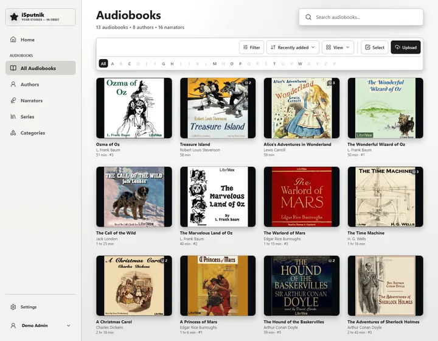
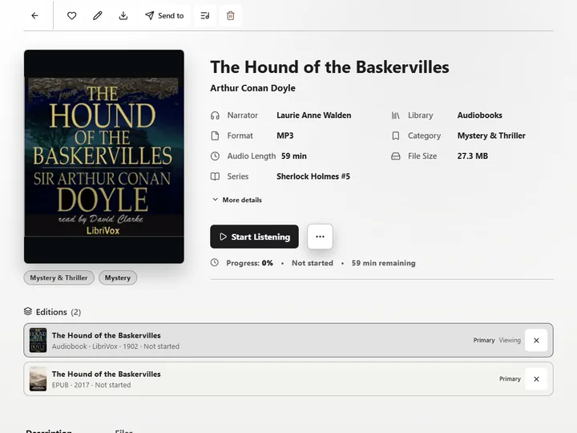
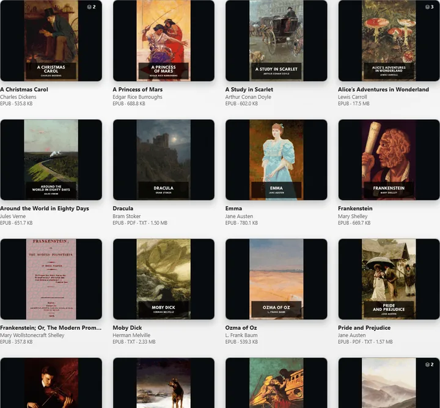
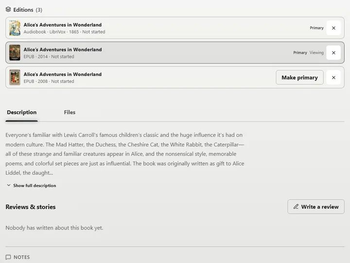
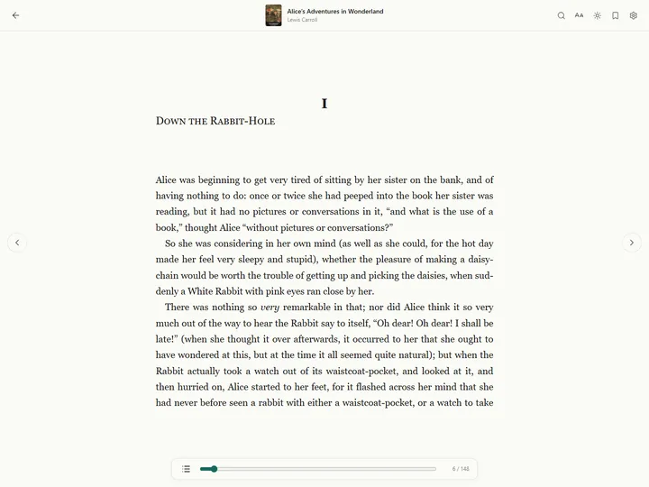
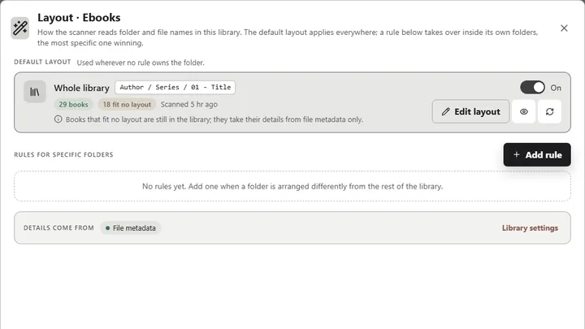
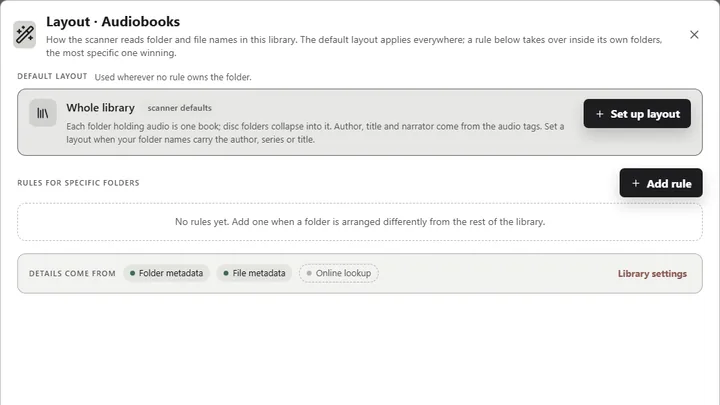
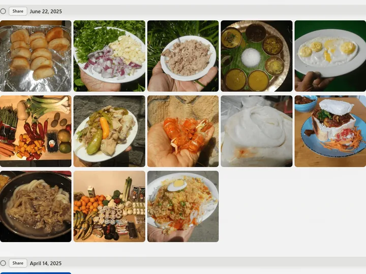
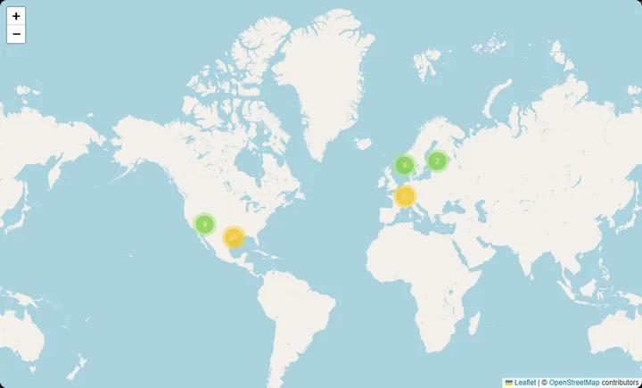
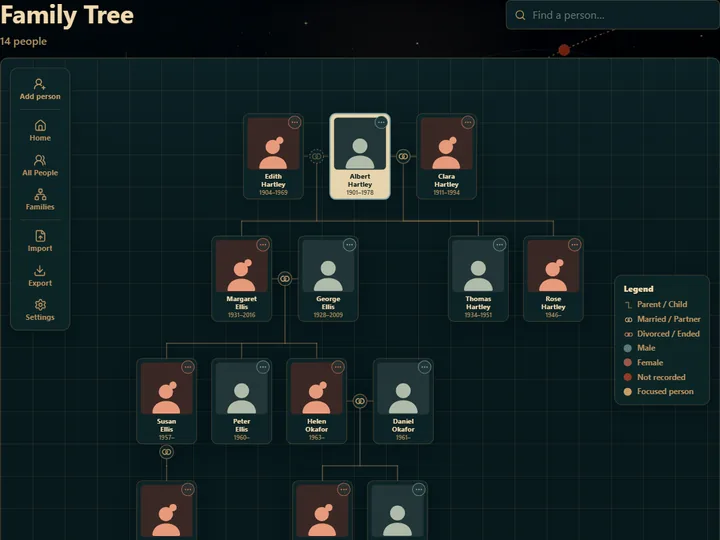

Open source · Self-hosted
isputnik.home
Your family's media library, under your own roof. Audiobooks, ebooks, photos, and videos — served from your home, for the people you trust.
- 4digital libraries: audiobooks, ebooks, photos, video
- 0subscriptions. No cloud, no account with anyone but you
- 100the score to beat. A security page grades the install and says what to fix
- 1database file. Back it up, restore it anywhere
Library
Every book you own, on one shelf.
-

Audiobooks
A folder of files becomes a book with chapters, a cover, the reader who recorded it, and its place in the series. Stop on your phone, pick up on the laptop, come back a year later — the bookmark is still there.
-

A page per book
Cover, description, narrator, series position, the chapters, and how far along you are. Send it to a phone for the plane; it comes back with the progress made offline.
-

The player
Chapters, bookmarks, a speed dial and a sleep timer. Where you stopped is kept on the server, so the phone and the laptop always agree on where you are.
-

Ebooks
EPUB and FB2 open in a reader built in; PDF opens as itself. The same title in three formats is one book, not three. OPDS feeds let your own e-reader app browse the shelf.
-

Editions
A second translation, another publisher's text, the audiobook of a book you also own — those are editions, grouped on one page with the one you're reading marked.
-

The reader
Paged or scrolled, day or night, your typeface. Highlight a passage and keep it as a quote — it remembers the page. Or send the book straight to a Kindle from its page.
-

Folders become books
Tell the scanner how your ebook folders are arranged once — Author, then Series, then a numbered title — and it reads every book that way. A folder arranged differently gets a rule of its own, and the most specific rule wins.
-

Audiobooks read themselves
An audiobook library needs no layout to start: a folder of audio is one book, and the author, title and narrator come from the tags. Give it a layout only when the folder names know something the tags don't.
Photos & videos
Every photo, sorted by itself.
-

Timeline
Point it at the folders you already have. Photos land on a timeline by the day they were taken, the same day in earlier years surfaces on its own, and nothing is copied or moved.
-

Gallery view
Or drop the dates and let the whole library run as one continuous grid, at the tile size you like. Both shapes live behind the same View control, and the choice sticks.
-

People
Turn it on for a library and a background job finds faces and gathers them into people. Name the ones who matter and the name sticks. The models ship with the app; not one pixel is sent anywhere.
-

Map
Anything with a location joins the map, gathered into clusters until you zoom close enough to tell them apart. Photos without one can be placed by hand — search for the town, drop a pin, done for the whole batch.
-

Albums and slideshows
An album is a set you choose; a slideshow is an album with a transition and your music under it. Render it to a real 1080p movie in the background — the file lands back in the gallery.
-

Duplicate cleanup
Phone backups run twice. A cleanup finds the copies, says which one it would keep and why, and lets you work through the list at your own pace. Everything removed goes to the Recycle Bin, not to oblivion.
Stories & family
The trip, told properly. The people, kept.
-

Stories
A page you write yourself — your words, with the photos, the album, the map of the route, a person from the family tree, a quote — placed where they belong in the telling. One scrollable page, or a chapter per day.
-

Family tree
Parents above, children below, partners alongside. Second marriages, adoptions and half-siblings drawn the way they were. GEDCOM in and out, so nothing is locked in.
-

A profile for everyone
Every person has a page: their relationships, a timeline, their photos, the things they said. The people the gallery found can be linked straight to their place on the tree.
-

Quotes
Something worth keeping from a book, a person, or anywhere. Captured from the reader with the page remembered, or typed in by hand. One comes back each morning on the home page.
Themes
Appearance.
Selection: Minimalist The default. Platinum grey and black ink, like a certain beige computer.
Security
Safe to put on the internet.

One page scores the whole install out of 100 and grades every policy behind the number. Each row opens the setting that owns it, so raising the score is a matter of working down the list. The pieces are the ones a bank uses, sized for a household.
Two-factor sign-in
An authenticator app or an emailed code, and passkeys for the people who have them. It can be required only from outside the house.
Lockout and blocking
Repeated failures lock the account and, if they keep coming, block the address. Rate limits and a strict Content Security Policy sit underneath.
Trusted networks
Your own network is known. Anything from outside it is held to a stricter standard, and deleting can be limited to home.
Someone is told
An email to the admin when a sign-in comes from somewhere new, and a full activity log to check afterwards.
Yours. Really.
One SQLite file, your files where you put them.
Backups you can download and restore anywhere, on a nightly schedule if you like. A Recycle Bin for everything deleted. Runs in Docker or from the Unraid app store, and the source is yours to read.